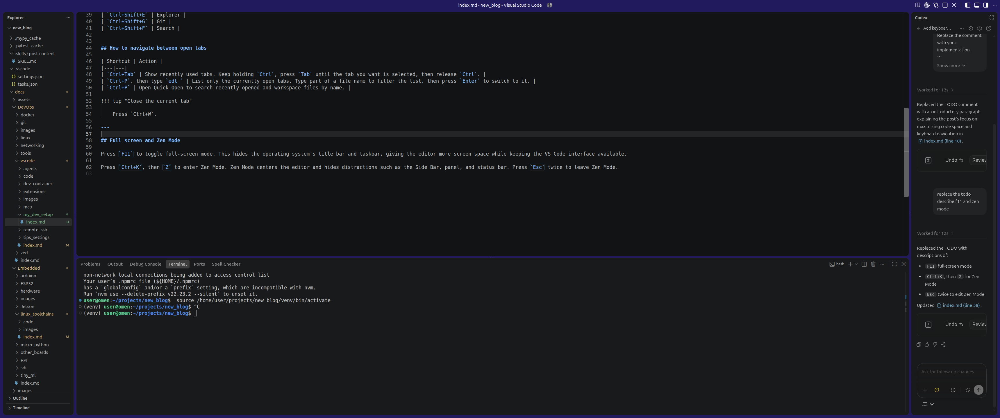
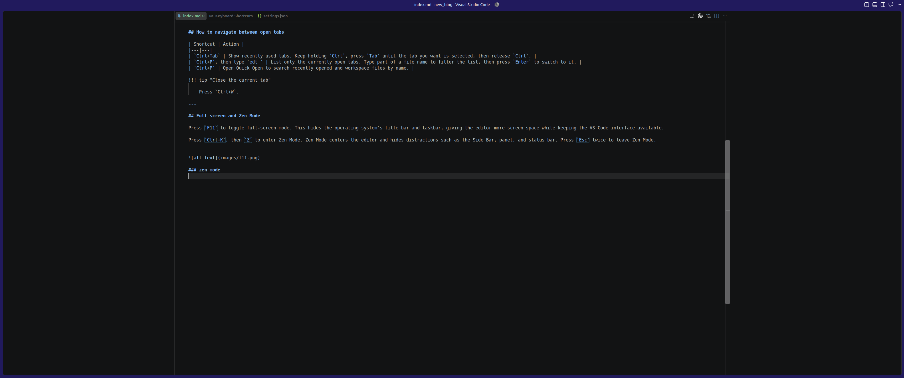

VSCode setup for keyboard navigation and maximum code space
This setup keeps VS Code focused on the code by hiding space-consuming UI elements and relying on keyboard shortcuts for navigation. The settings below maximize the editor area, while the shortcut reference makes it easy to move between files, symbols, definitions, and tools without reaching for the mouse.
| Shortcut | Action |
|---|---|
Ctrl+P |
Find/open file |
Ctrl+Shift+O |
Find symbol in current file |
Ctrl+T |
Find symbol in workspace |
F12 |
Go to definition |
Alt+F12 |
Peek definition |
Shift+F12 |
Find references |
Ctrl+B |
Toggle Side Bar |
Ctrl+Alt + B |
Toggle secondary bar (Chat Bar) |
Ctrl+J |
Toggle terminal/panel |
Ctrl+Shift+E |
Explorer |
Ctrl+Shift+G |
Git |
Ctrl+Shift+F |
Search |
Ctrl+0 |
focus primary side bar (the result: like open explorer) |
How to navigate between open tabs
| Shortcut | Action |
|---|---|
Ctrl+Tab |
Show recently used tabs. Keep holding Ctrl, press Tab until the tab you want is selected, then release Ctrl. |
Ctrl+P, then type edt |
List only the currently open tabs. Type part of a file name to filter the list, then press Enter to switch to it. |
Ctrl+P |
Open Quick Open to search recently opened and workspace files by name. |
Close the current tab
Press Ctrl+W.
Custom key binding
Toggle Maximized Panel
Add custom ctrl+shift+x (the idea from terminator) to maximum the terminal view or the code view in group split
| keybinding.json | |
|---|---|
Full screen and Zen Mode
Press F11 to toggle full-screen mode. This hides the operating system's title bar and taskbar, giving the editor more screen space while keeping the VS Code interface available.
Press Ctrl+K, then Z to enter Zen Mode. Zen Mode centers the editor and hides distractions such as the Side Bar, panel, and status bar. Press Esc twice to leave Zen Mode.

Zen mode

Split and navigation
Split the editor when you want to view or edit multiple files at the same time.
| Shortcut | Action |
|---|---|
Ctrl+\ |
Split the current editor vertically, opening a new pane to the right. |
Ctrl+K, then Ctrl+\ |
Split in the direction perpendicular to the current layout. In a vertical layout, this creates a horizontal split. |
Ctrl+1, Ctrl+2, Ctrl+3 |
Focus the first, second, or third editor pane. |
You can also open the Command Palette with Ctrl+Shift+P and run View: Split Editor Right or View: Split Editor Down to choose the split direction explicitly. After creating panes, use Ctrl+1, Ctrl+2, and so on to move between them without using the mouse.
workbench color
When working with multiple VS Code windows at once, using a different title bar color for each workspace makes them easier to distinguish.